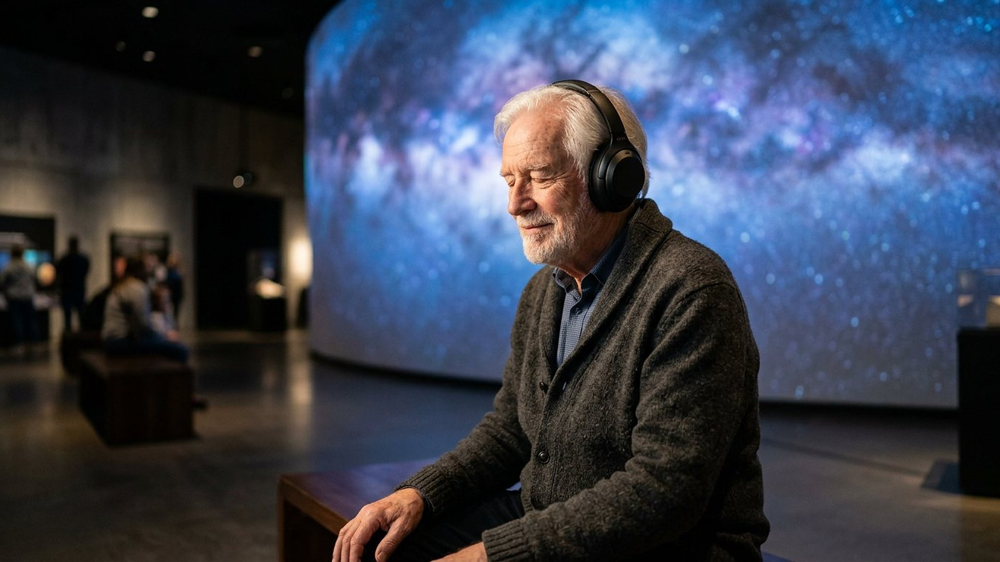

Accueil → Accessibilité
Accessibilité
Objectif : le niveau AA des règles internationales d'accessibilité (WCAG 2.2). Voici ce qui est en place, comment c'est vérifié, et ce qui reste à améliorer.

Déclaration
État de conformité
Le musée CREATIO vise le niveau AA des Règles pour l'accessibilité des contenus web (WCAG), version 2.2.
En toute transparence
La conformité est vérifiée à chaque version par des tests automatisés (navigation au clavier, contrastes, tailles des cibles, textes de remplacement, absence de débordement sur mobile, fonctionnement avec mouvement réduit, quatre modes de rendu). Aucun audit indépendant réalisé par des personnes en situation de handicap n'a encore eu lieu : le musée se déclare donc en cours d'évaluation, et non « totalement conforme ».
Concrètement
Ce qui est mis en place
- Clavier : toutes les commandes (curseurs, boutons, volets, questionnaires) fonctionnent au clavier ; un lien d'évitement mène directement au contenu.
- Lecteurs d'écran : les résultats des interactions sont annoncés par des zones de texte actualisées ; les images portent une description ; les dessins animés purement décoratifs sont masqués.
- Contraste : un bouton « Contraste renforcé » est présent sur chaque page ; les couleurs par défaut visent le niveau AA.
- Mouvement : le musée respecte le réglage « réduire les animations » de l'appareil ; aucune animation ne démarre seule dans les interactions.
- Audio : chaque piste de l'audioguide est accompagnée de sa transcription intégrale ; aucune lecture automatique.
- Interactions graphiques : chaque interaction possède quatre modes de rendu, jusqu'à une image JPG fixe, et un texte qui donne les mêmes résultats.
- Cibles : les zones cliquables mesurent au moins 24 pixels de côté, conformément au critère 2.5.8.
- Langue : toutes les pages sont déclarées en français ; les termes étrangers sont expliqués immédiatement.
Limites connues
Ce qui peut encore poser difficulté
- Les visualisations graphiques restent difficiles à percevoir sans la vue ; leurs résultats sont toujours donnés en texte, mais la forme du dessin n'est décrite que brièvement.
- Certaines légendes contiennent des nombres en notation scientifique (par exemple 10⁻⁷), que tous les lecteurs d'écran ne prononcent pas de la même façon.
- Les liens vers les sources externes mènent à des sites d'éditeurs dont l'accessibilité ne dépend pas du musée.
Une adresse de contact pour signaler une difficulté sera publiée lors de la mise en ligne définitive du musée. Le fonctionnement technique est détaillé dans Comment fonctionne le musée.